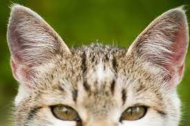
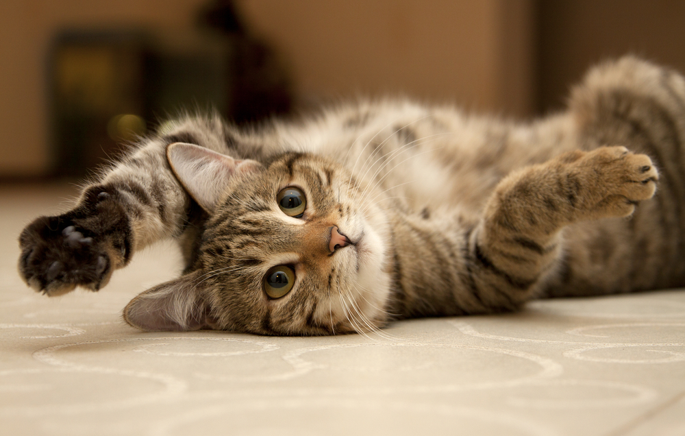

Ear moving
 When they are looking at each other or at their owner, you can recognize weird ear movings.This only has one role: The communication between cats, no, they are not communicating with meow.
The meowing is only for communication with humans, but there are exceptions.
However, who already has a cat this is not a new fact.
Every ear moving direction has it own role.
Why evading your hand during pet?
 The cats are usually in good mood and they rubbing onto everything. But there are exceptions when the opposite happens and they decline you to pet them.When this happens before you can pet them, they go to flatten so you can't reach them. The cat owners are sure already experienced this.
When this happens, this means they doesn't want you to pet them and they want you to leave them alone.
There are moments when even our cats are not full with joy, or they just finished with their fur cleaning and doesn't want to get dirty by human hands.
The cat bites you while you pet them.
The cats cannot express their feelings..they can't talk and then communicating with meowing is not possible. I mean, can you understand it? There are two types of cat bites. Aggressive, and lovely. It sounds weird, but cats bite you when they just want to express their liking.These bites are very weak, if you recognize that they bite you while you pet them but its not hurts, then you don't need to worry.
Because: They just express their love.
I give food, but they just leaving it there!
 Cats..cats..they are doing even the weirdest things, and this one belongs here too.
Cats..cats..they are doing even the weirdest things, and this one belongs here too.Because, they keep meowing till you give them food but then they leaving it there.
In fact, your cat is not hungry they simply just want to test you that how much do you care about them.
If you gave food to them then they will rub onto you and then thank.
Do you remember when the cat hunt down something then brings it to you?
This is almost the same! The difference is, that they now want something from you and if they won't get it they become grumpy
After you gave it to them, they look at you with closed eyes which in short means smiling.
How old my cat is in human years?
cat years → human.
- 1 month → means 6 month
- 3 month → means 2-5 év
- 2 year → means 24 year
- 3 year → means 28 year
- 4 year → means 32 year
- 5 year → means 36 year
- 6 year → means 40 year
- 7 year → means 44 year
- 8 year → means 48 year
- 9 year → means 52 years
- 10 year → means 56 year
- ...12 year → means 64 year.